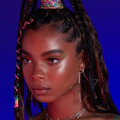

Versatile Makeup Archetype

Face:
- Flawless Foundation (Light/Medium Coverage): Creates a natural, even canvas for a versatile makeup look. Explore
- Tinted Moisturizer: Offers light coverage for a natural and fresh look. Explore
- BB Cream: Provides light coverage with skincare benefits for an effortless look. Explore
- Natural Finish Primer: Creates a smooth canvas with a natural, non-shiny finish. Explore
- Cream Blush (Optional): Adds a touch of color for a natural flush. Explore
Eyes:
- Neutral Eyeshadow Palette (Matte/Satin): Offers versatile shades like browns and taupes for various looks. Explore
- Brown/Black Eyeliner (Pencil/Gel - Optional): Defines the eyes subtly as needed for different looks. Explore
- Lengthening Mascara (Optional: Colored Mascara): Enhances lashes for added definition or adds a pop of color. Explore
Lips:
- Tinted Lip Balm: Provides a hint of color and keeps lips hydrated. Explore
- Balm with SPF: Protects lips while offering a hint of color and moisture. Explore
- Nude/Pink/Berry Lipstick (Satin/Cream Finish): Offers versatile shades for different looks. Explore
- Glossy Lipstick (Optional): Adds shine and dimension to lips for a versatile finish. Explore